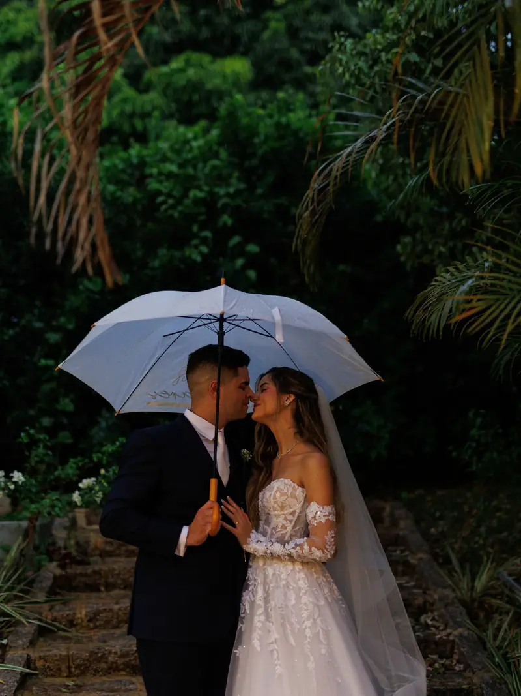

IAntes do sim
Na suíte da noiva
Cabelo e maquiagem no camarim com espelho iluminado, com calma e privacidade, a poucos passos da cerimônia.
Do making of na suíte da noiva à última música na pista de LED, o dia inteiro acontece no Château de Lumière, a cerca de uma hora de São Paulo.
N° 01
A jornada do dia
Ninguém pega a estrada entre a cerimônia e a festa: tudo acontece no mesmo endereço.
Cabelo e maquiagem no camarim com espelho iluminado, com calma e privacidade, a poucos passos da cerimônia.

O corredor branco entre flores leva ao altar sob o teto de vidro. Para quem prefere o ar livre, há o arco florido do jardim.

Arcos, deck e o reflexo das luzes na água: o cenário das fotos que vão para a parede.

Pé-direito alto, lustres de cristal e uma ambientação que se adapta ao estilo do casal.

Da primeira dança à última música, a pista iluminada é o palco da comemoração.

N° 02 — Tenda Monreale
A Tenda Monreale é coberta. Se o tempo mudar, nada muda no seu planejamento: os convidados ficam protegidos e a cerimônia continua linda.

N° 03 — Experiências
Entrada de carruagem pela alameda, ensaio no lago ao entardecer, editorial na Tenda Monreale. Fornecedores parceiros ajudam a transformar cada ideia em realidade.
E tem tirolesa
O Château tem tirolesa, um dos diferenciais do espaço. Pergunte à equipe como incluí-la na sua celebração. Conhecer a tirolesa
N° 04
Álbum
Clique em uma foto para ver em tamanho grande.
N° 05 — Quem celebrou aqui
Lugar lindo, perfeito. Cada detalhe feito com muito capricho, um sonho.
Sim. A Tenda Monreale é uma estrutura de vidro coberta, então a cerimônia acontece protegida, faça chuva ou faça sol.
Sim. A cerimônia acontece na Tenda Monreale ou no jardim, as fotos no lago e nos jardins, e a recepção no salão principal, tudo no mesmo endereço.
Sim. O Château tem suíte da noiva com camarim e espelho iluminado.
A agenda está aberta para 2027, 2028 e 2029. Consulte a disponibilidade da sua data pelo WhatsApp ou pelo formulário de visita.
Pelo formulário “Agendar visita” ou pelo WhatsApp (19) 99411-2741. A equipe confirma o melhor dia e horário.
Sim. A tirolesa é um dos diferenciais do Château de Lumière. Consulte a equipe para saber como incluí-la na sua celebração.
N° 07 — Agende sua visita
Agende uma visita e conheça a Tenda Monreale, o salão, o lago, a suíte da noiva e a tirolesa. Respondemos pelo WhatsApp.
Usamos cookies para entender as visitas e melhorar o site. Veja a política de privacidade.